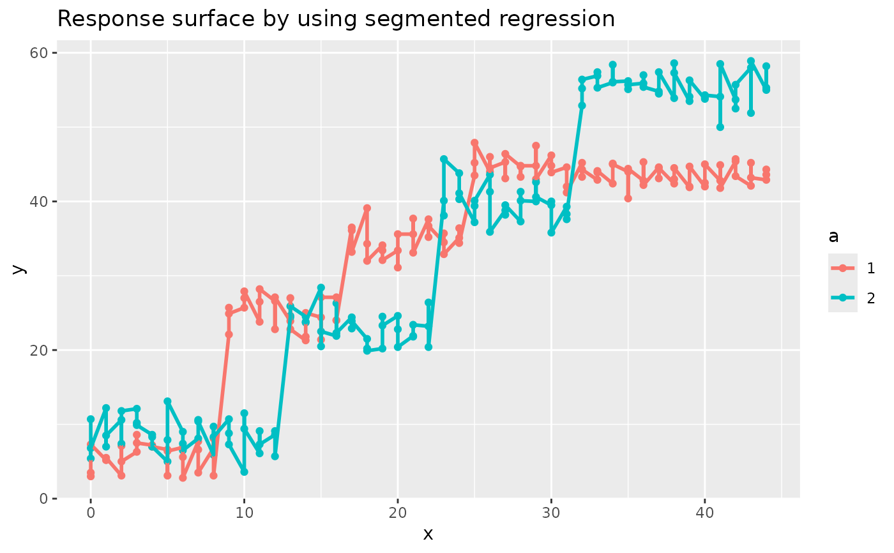

Example 7.7 from Generalized Linear Mixed Models: Modern Concepts, Methods and Applications by Walter W. Stroup (p-235)
Source:R/Exam7.7.R
Exam7.7.RdExam7.7 is an explaination of segmented regression
References
Stroup, W. W. (2012). Generalized Linear Mixed Models: Modern Concepts, Methods and Applications. CRC Press.
Author
Muhammad Yaseen (myaseen208@gmail.com)
Adeela Munawar (adeela.uaf@gmail.com)
Examples
library(splines)
library(ggplot2)
DataSet7.7$a <- factor(x = DataSet7.7$a)
knots <- c(0, 0, 0, 0, 10, 10, 20, 30, 40, 40, 40, 45, 45, 45, 50, 50, 50)
bx <- splineDesign(knots = knots, x = DataSet7.7$x, outer.ok = TRUE)
Exam7.7fm <- lm(formula = y ~ a*bx, data = DataSet7.7)
anova(Exam7.7fm)
#> Analysis of Variance Table
#>
#> Response: y
#> Df Sum Sq Mean Sq F value Pr(>F)
#> a 1 7 6.8 0.4041 0.5255
#> bx 10 67794 6779.4 405.7268 <2e-16 ***
#> a:bx 10 4419 441.9 26.4455 <2e-16 ***
#> Residuals 248 4144 16.7
#> ---
#> Signif. codes: 0 ‘***’ 0.001 ‘**’ 0.01 ‘*’ 0.05 ‘.’ 0.1 ‘ ’ 1
Data <- data.frame(DataSet7.7, fit = Exam7.7fm$fit)
##---Estimated response surface by using segmented regression
Plot <-
ggplot(data = Data , mapping = aes(x = x, y = y, colour = a)) +
geom_point() +
geom_line(linewidth = 1) +
ggtitle("Response surface by using segmented regression")
print(Plot)
